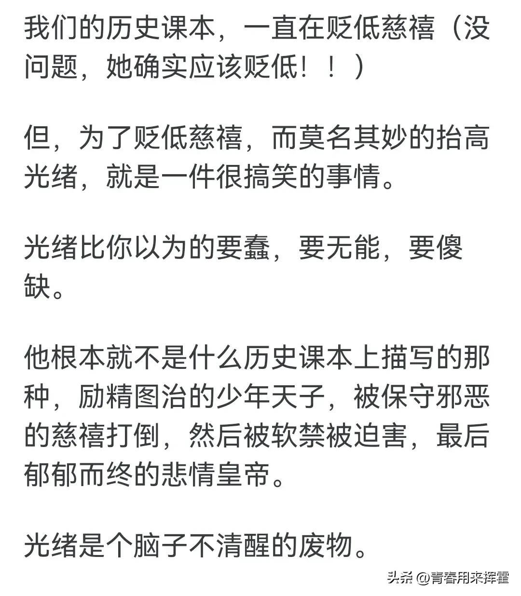
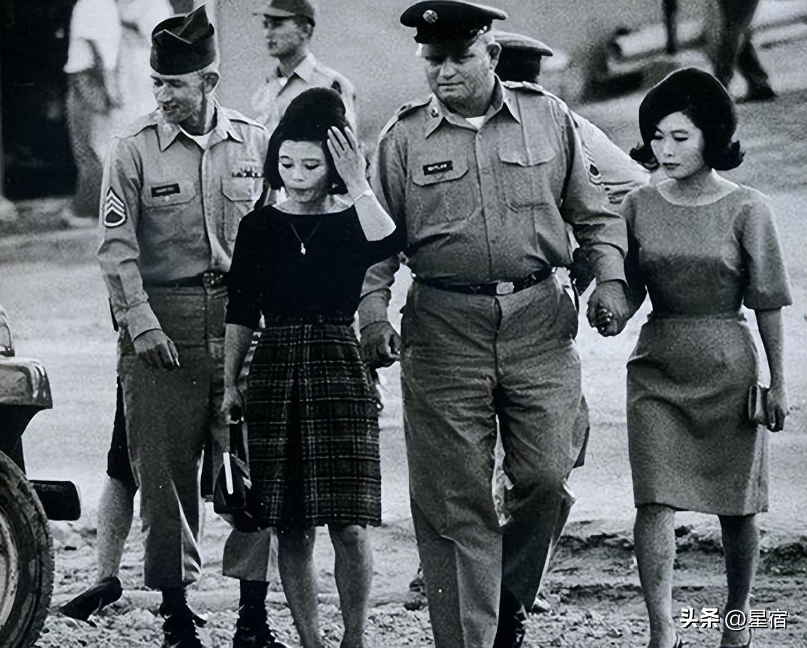
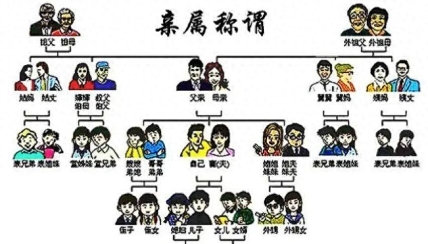

为什么光绪皇帝不能夺了慈禧的权？网友：真是颠覆了我的认知！
青春用来挥霍 9评论 09月17日

若国民党赢了内战，蒋介石统治中国，中国的未来会是什么样？
星宿 1评论 09月23日

他是建国以来潜逃级别最高的贪官：至今仍未落网，逃跑方式成了谜
墟史往事 5天前
走完长征的唯一西方人李德，1939年离开延安，为何再没回过中国？
上上下下 09月21日
为什么出了“五服”才不是亲戚？你知道“五服”是什么吗？
长青历史 196评论 08月29日

王宝钏守寒窑18年，为何当了18天皇后死了？她的死让薛平贵松口气
曦月谈 10月09日
武松的后半生：在杭州六和寺出家，终生陪伴自己的两位好兄弟
寻墨阁 131评论 11月12日
索马里海盗那么爱抢劫，为何就是不抢中国船？这两件事揭露了真相
老巫追剧 5评论 10月10日